Flexbox. Знакомство
Автор: Бастун Андрей
Включение Flex
Flexbox – CSS механизм, который позволяет контролировать размер дочерних элементов и их
выравнивание по двум осям. Чтобы разаботал flexbox, нужно задать элементу свойство
display: flex; или display: inline-flex;.
- Элемент с
display: flex;илиdisplay: inline-flex;превращается в “flex-контейнер”. - Все дочерние элементы становятся “flex-элементами” и начинают располагаться по новым правилам.
Главная и поперечные оси
В обычном потоке документа блочные элементы располагаются сверху вниз, а текст - слева направо. Это работает для большинства видов письменностей, в частности для латиницы и кириллицы. Во флекс модели элементы выстраиваются и выравниваются вдоль осей и их направление можно изменить.
Главной осью flex-контейнера является направление, вдоль которого располагаются дочерние элементы - от начала оси к концу. Поперечной осью называется направление перпендикулярное главной оси.
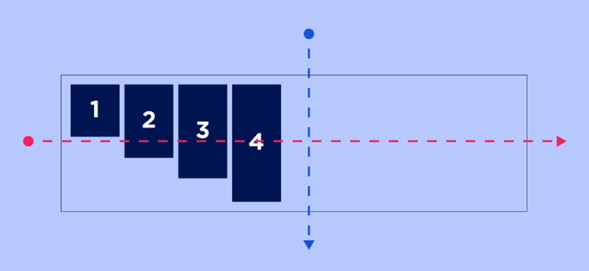
По умолчанию главная ось направлена слева направо, но ее можно развернуть при помощи свойства
flex-direction: row / column / row-reverse / column-reverse. Поперечная ось всегда
перпендикулярна главной и поворачивается вместе с ней.
На рисунках красным указана главная ось, синим - поперечная, а точками начало осей:
-
row (default) – слева направо 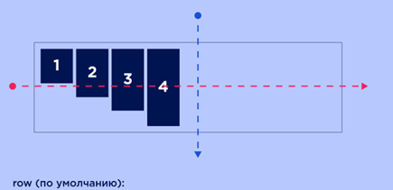
-
column – сверху вниз 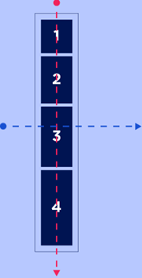
-
row-reverse – справа налево 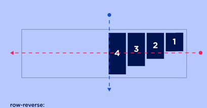
-
column-reverse – снизу вверх 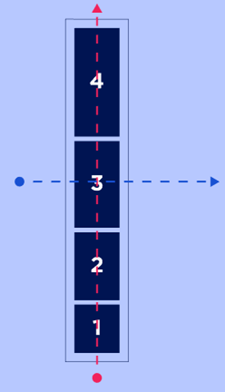
Распределение flex-элементов
Выравнивание по главной оси
Выровнять элементы вдоль главной оси можно при помощи свойства
justify-content: flex-start / flex-end / center / space-between / space-around / space-evenly.
-
flex-start (default) – у начала главной оси. 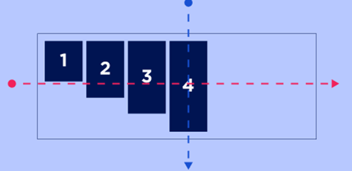
-
flex-end – в конце главной оси. 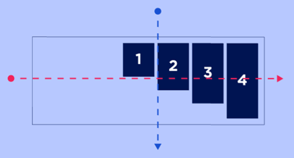
-
center – в центре главной оси. 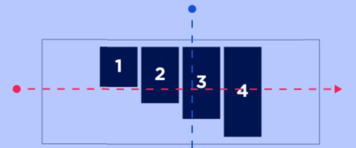
-
space-between – расстояния между соседними элементами одинаковые, а между элементами и краями flex-контейнера отступов нет. 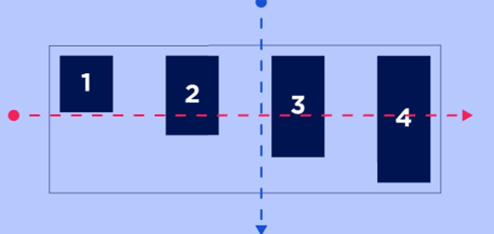
-
space-around – расстояния между соседними элементами одинаковое, а между элементами и краями flex-контейнера отступ равный половине расстояния между соседними элементами. 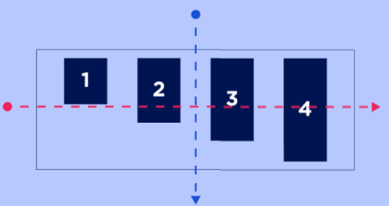
-
space-evenly – расстояния между элементами и краями flex-контейнера одинаковые.
Распределение элементов по главной оси задается для всего flex-контейнера и на все flex-элементы действует одинаково, задать какому-то flex-элементу отличное от других распределение по главной оси нельзя.
Выравнивание вдоль поперечной оси
Выровнять элементы вдоль поперечной оси можно при помощи свойства
align-items: stretch / flex-start / flex-end / center / baseline.
-
stretch (default) – элементы растягиваются на всю высоту/ширину flex-контейнера в зависимости от направления поперечной оси. 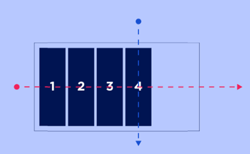
-
flex-start – у начала поперечной оси. 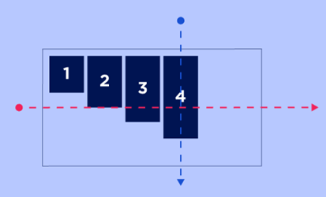
-
flex-end – в конце поперечной оси. 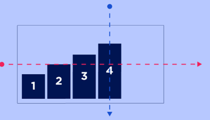
-
center – по центру поперечной оси. 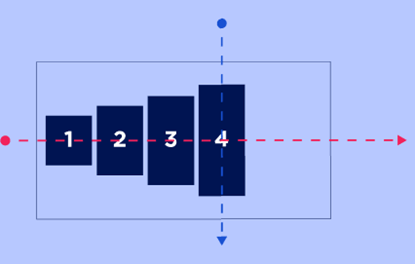
-
baseline – по базовой линии текста внутри них.
Поперечное выравнивание можно задать каждому элементу отдельно, для этого используется свойство
align-self, которое задается для самих flex-элементов, а не контейнера. У свойства
align-self те же самые значения, что и у align-items.
Перенос flex-элементов
Если flex-элементов в контейнере станет больше, чем может уместиться в один ряд/колонку, то:
- Они будут сжиматься до минимально возможной ширины.
- Даже если им задать ширину, механизм flexbox изначальоно может ее уменьшить, но это поведение можно изменить.
- Если они перестанут помещаться в контейнер и после уменьшения, то выйдут за его пределы, но продолжат располагаться в один ряд и произойдет переполнение.
Чтобы этого не происходило, нужно воспользоваться свойством
flex-wrap: nowrap / wrap / wrap-reverse.
- nowrap (default) – перенос отключен.
- wrap – разрешает перенос, ряды/колонки элементов расположены вдоль поперечной оси, начиная от ее начала.
- wrap-reverse – разрешает перенос, ряды/колонки элементов расположены вдоль поперечной оси, начиная от ее конца. 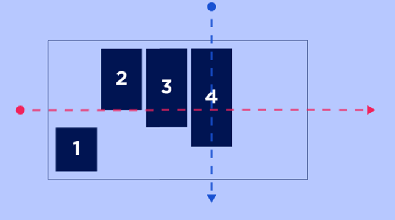
Совмещенный синтаксис flex-direction и flex-wrap
При помощи свойства flex-flow можно уменьшить количество написанного кода, он в себе
совмещает flex-direction и flex-wrap.
И обладает следующим синтаксисом:
flex-flow: <’flex-direction’> <’flex-wrap’>;Пример:
flex-flow: column nowrap;Выравнивание рядов/колонок flex-контейнера
Свойство align-content управляет выравниванием рядов/колонок флекс-элементов вдоль
поперечной оси. У него и свойства justify-content очень схожие значения:
-
stretch (default) – растягивает ряды флекс-элементов, при этом оставшееся свободное место между ними делится поровну. Отображение строк при этом зависит от значения
align-items:- Если у
align-itemsзадано значениеstretch, то элементы в строках растягиваются на всю высоту своей стоки. - Если значение отлично от
stretch, то элементы ужимаются под своё содержимое и выравниваются в строках в зависимости от значенияalign-items.
- Если у
-
flex-start – в начале поперечной оси. 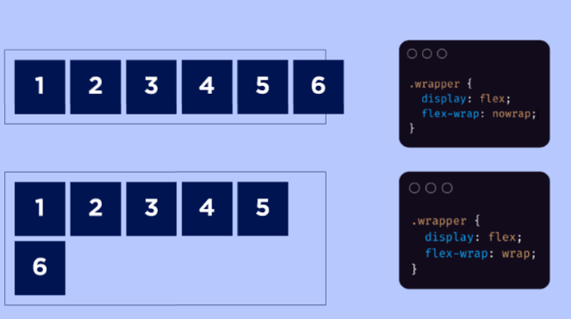
-
flex-end – в конце поперечной оси. 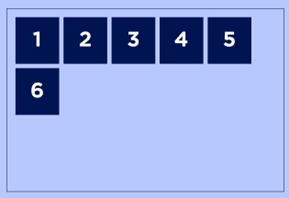
-
center – в середине поперечной оси так, что отступов между соседними рядами нет, а расстояния до краев flex-контейнера одинаковые. 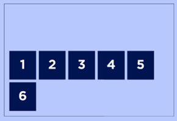
-
space-between – равномерно распределяет ряды flex-элементов вдоль поперечной оси, расстояния между рядами одинаковые, отступов от краев flex-контейнера нет. 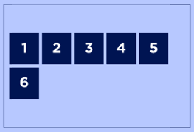
-
space-around – равномерно распределяет ряды flex-элементов вдоль поперечной оси, расстояния между соседними рядами одинаковые, отступы у краев равны половине расстояния между соседними рядами. 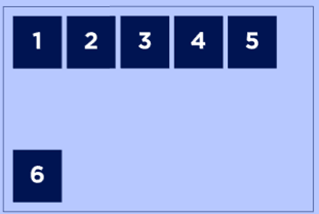
-
space-evenly – равномерно распределяет ряды вдоль поперечной оси, расстояния от края и между соседними элементами одинаковые. 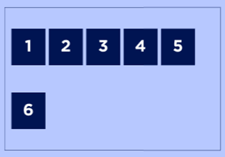
Свойство align-content «перекрывает» заданное значение align-items,
которое управляет выравниванием flex-элементов вдоль поперечной оси. Это происходит в любом
случае.
Расширение и сжатие flex-элементов
Свойство flex-grow определяет, насколько элемент может «расти» относительно других
flex-элементов внутри контейнера.
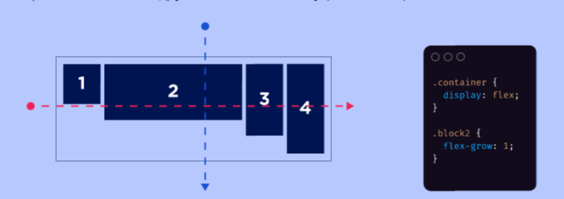
Значение определяет пропорцию роста элемента. Если у нескольких элементов установлены разные
значения flex-grow, то свободное пространство будет распределено пропорционально
этим значениям.
Свойство flex-shrink определяет, насколько элемент может сжиматься по сравнению с
другими элементами в контейнере, если пространство ограничено.
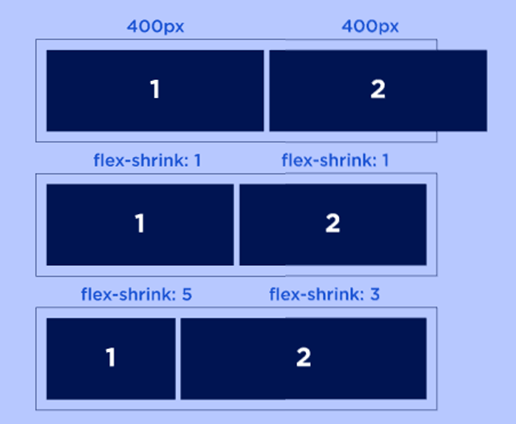
Базовый размер flex-элемента
Свойство flex-basis задает базовый размер флекс элемента по главной оси. Это
свойство определяет размер контент-бокса, если не задано иначе через box-sizing.
flex-basis имеет следующие значения:
-
<’width’>- задает базовую ширину flex-элемента. 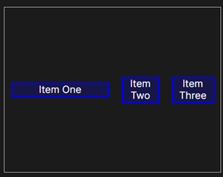 -
content - автоматически задаёт размер на основе содержимого flex-элемента. 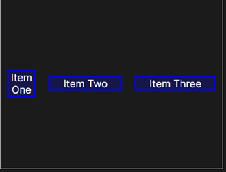
-
auto – смотрит на ширину/высоту flex-элемента. 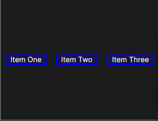
Порядковый номер flex-элемента
С изменением порядка отображения без изменения html, необходимо быть крайне внимательным, так как это может снизить доступность вашей страницы.
Порядок следования flex-элементов в потоке можно изменить при помощи свойства order
и порядкового номера flex-элемента, не меняя при этом HTML-код. По умолчанию порядковый номер
flex-элементов равен 0, а сортировка элементов производится по возрастанию номера. Порядковый
номер задается целым числом, положительным или отрицательным.